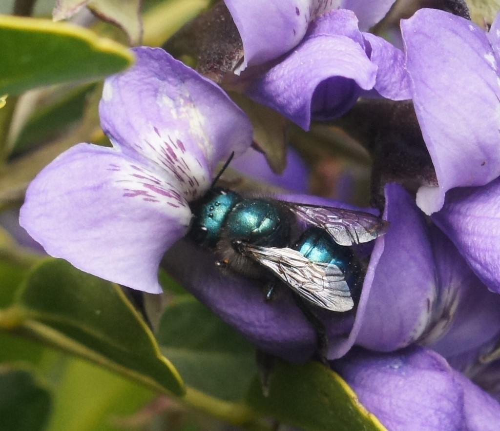
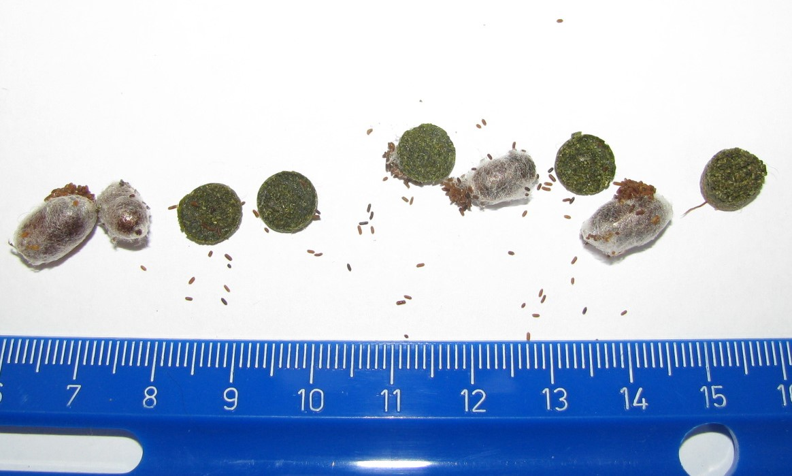

Osmia ribifloris


Right: A female O. ribifloris on Texas mountain laurel, Dermatophyllum secundiflorum (Photo by Melanie Schuchart, used with permission). Left: A male O. ribifloris on manzanita, Arctostaphylos. Photo by Ken Kertel, 2010 used with permission.
Quick Facts
- Native to western North America
- One generation per year and flies in early spring
- Specializes on plants in the family Ericaceae and others
- Nests in cavities that are 6 to 7 mm in diameter
- Uses leaf pulp to make cell partitions and nest plug
- An excellent blueberry pollinator
Osmia ribifloris a solitary bee that inhabits western North America and northern Mexico. It can be found in hilly, forested or chaparral habitats in Oregon, California, Nevada, Arizona, New Mexico, Utah, Colorado, Wyoming and Texas. This bee is similar in size and appearance to Osmia lignaria. Males are metallic green and have pale colored hairs on the face. Females are larger, dark metallic blue-green and more robust than males. O. ribifloris has a more limited floral host range than O. lignaria (Sampson et al. 2013). It visits flowers in the families Ericaceae, Berbidaceae and Fabaceae. A favored host in California is manzanita, Arctostaphylos.
Blueberries, Vaccinium spp. (family Ericaceae) are readily pollinated by O. ribifloris (Torchio 1990, Sampson and Cane 2000).
Like O. lignaria, O. ribifloris overwinters as an adult and emerges in the early spring (February to March (Sampson, Cane et al. 2015)). Each O. ribifloris female can produce 16-22 progeny in 2-3 cavities and the sex ratio was measured as 1 female: 2.7 females in captivity (Sampson, Cane et al. 2015). This bee has a winter diapause and requires 90 to 120 days at 6°C (Sampson, Cane et al. 2015). Bees emerge after 4-8 days depending on length of diapause and incubation temperature. Bees will fly at temperatures above 9°C (48°F) (Sampson, Cane et al. 2015). Favored leaf sources for making its nest partitions and plugs include Rosa, Vaccinium, Quercus, Rubus, Fragaria (Sampson, Cane et al. 2015).

Pollination trials showed that a single visit by O. ribifloris to rabbiteye blueberry resulted in 44% fruit set (compared to 4% with no bee visitation). Honey bees averaged 32% set and Habrapoda laboriosas visits averaged 44% fruit set (Sampson and Cane 2000). A rate of two O. ribifloris per rabbiteye blueberry bush set 54% of the fruit (Sampson et al. 1995).
Torchio (1990) recommended 300 O. ribifloris per acre in highbush blueberries. For rabbiteye blueberry, 650 to 1300 females per acre are recommended for adequate pollination (Sampson and Cane 2000). Torchio (1990) found the bees preferred 6 mm holes over 7 mm diameter holes, they spent 3 s at flowers and 6 s between flowers, females visited 3 to 5 flowers per plant, and each foraging trip lasted an average of 17 min. At least 11 trips were needed to provision one cell. In a trial on highbush blueberry, 400 females produced 1461 cells (or 3.65 cells per released female, an approximate 1.2-fold increase). Provisions were composed entirely of blueberry pollen and nectar.
O. ribifloris collected from Texas and California were similar genetically (98%), but differed from Utah bees (Sampson, Rinehart et al. 2015). Texas/California bees produced more offspring per nest and more females per nest than Utah bees (Sampson, Rinehart et al. 2015).
Rust (1993) found that leaf material partitions were less costly for the bee to construct than the mud partitions made by O. lignaria.
Sampson, Cane et al. (2015) are optimistic that this species can become an important pollinator of blueberry stating that “California and Oregon farmers have a unique opportunity to easily manage this locally available and docile bee for blueberry pollination, in tandem with Osmia lignaria in almond orchards. Both of these Osmia spp. have similar management needs.”
Blueberry growers: Foothill Bee Ranch is in the process of raising a population of O. ribifloris for blueberry pollination. Check back in 2019 for availability.
References Cited:
Rust, R. W. 1993. Cell and nest construction costs in two cavity-nesting bees (Osmia lignaria propinqua and Osmia ribifloris biedermannii)(Hymenoptera: Megachilidae). Ann. Entomol. Soc. Am. 86:327-332.
Sampson, B. J. and J. H. Cane. 2000. Pollination efficiencies of three bee (Hymenoptera: Apoidea) species visiting rabbiteye blueberry. J. Econ. Entomol. 93:1726-1731.
Sampson, B., J. Cane, and J. Neff. 1995. Blue bees for blueberries. Ala. Agric. Exp. Stn. Auburn Univ. Highlights Agric. Res. 42: 12, 13, 15.
Sampson, B. J., J. H. Cane, C. T. Werle, T. A. Rinehart & J. J. Adamczyk. 2015. Best little orchard bee in Texas: Life history, population structure, management, & commercial status of a promising blueberry pollinator, Osmia ribifloris. Poster presentation available here.
Sampson, B. J., T. A. Rinehart, G. T. Kirker, S. J. Stringer, and C. T. Werle. 2015. Phenotypic variation in fitness traits of a managed solitary bee, Osmia ribifloris (Hymenoptera: Megachilidae). J. Econ. Entomol. 108:2589-2598.
Sampson, B. J., S. J. Stringer, and D. A. Marshall. 2013. Blueberry floral attributes and their effect on the pollination efficiency of an oligolectic bee, Osmia ribifloris Cockerell (Megachilidae: Apoidea). HortSci. 48:136-142.
Torchio, P. F. 1990. Osmia ribifloris, a native bee species developed as a commercially managed pollinator of highbush blueberry (Hymenoptera: Megachilidae). J. Kans. Entomol. Soc. 63: 427-436.